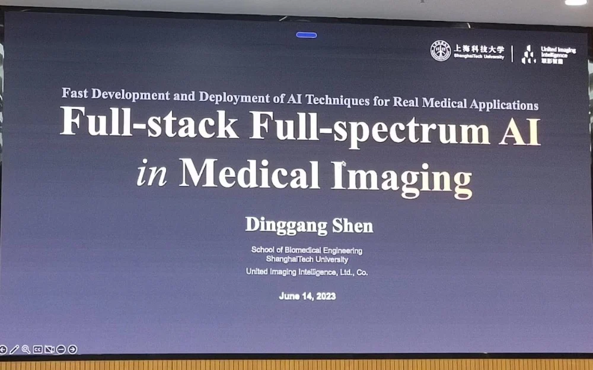
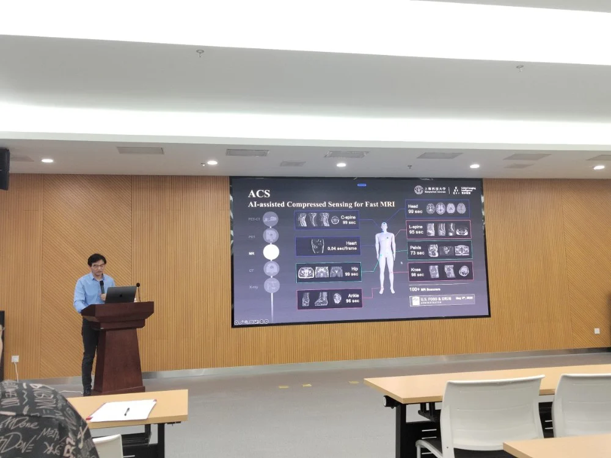
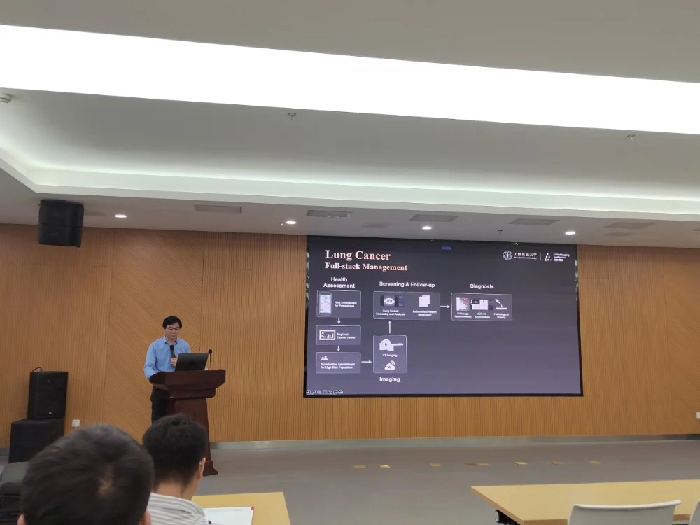

生物医学工程前沿系列—第一讲
邀请嘉宾：
沈定刚教授 上海科技大学 生物医学工程工程学院创始院长
上海联影智能医疗科技有限公司联合创始人、联席CEO
2023年6月14日，应中国科学院宁波材料技术与工程研究所人工智能影像团队的的邀请，上海科技大学生物医学工程工程学院教授沈定刚来访沈慈溪生物工程研究所，并做了题为《人工智能在全栈全谱医学影像中应用与创新研究》(Full-stack Full-spectrum AI in Medical Imaging)的主题报告。该报告基于中国医疗AI的实践经验，提出了联结工业界与学术界的、全栈全谱医学影像创新的新思路。本次学术分享会由赵一天研究员主持。
沈定刚，上海科技大学生物医学工程学院的创始院长和教授，同时也是上海联影智能联席CEO。他是IEEE（国际电气电子工程师学会）、AIMBE（美国医学和生物工程学会）、IAPR（国际模式识别协会）和MICCAI（医学图像计算与辅助干预学会）的会士。他曾任美国北卡罗来纳州立大学教堂山分校（UNC-CH）的杰弗里·豪普特杰出研究员和终身教授，领导图像分析与信息学中心、图像显示、增强和分析（IDEA）实验室以及医学图像分析核心。他还曾是宾夕法尼亚大学（UPenn）的终身助理教授和约翰霍普金斯大学的讲师/博士后。他的研究方向包括医学图像分析、机器学习、深度学习和计算机视觉。在国际期刊和会议论文集上发表了1500多篇同行评审论文，H指数为130，引用次数超过7万次。曾担任《Frontiers in Radiology》的主编，并担任8本国际期刊的副主编（或编辑委员会成员）。此外，他还于2012年至2015年担任MICCAI董事会成员，并担任MICCAI 2019大会主席。

沈教授在报告中介绍了近年来团队的相关工作。首先，他介绍了本报告的背景及意义，一方面，目前智能医疗中许多学术研究仅零散地用于医学影像的某个环节，并不会从整体上对临床工作流带来显著提升出发，因此只有从全栈全谱角度将AI方法组合起来，才有可能为临床工作带来真正的革新。另一方面，很多算法只能从影像中识别单一病灶或疾病，但在临床中医生却需要同时检查所有可能存在的疾病并出具报告。另一方面，临床诊断往往不仅使用一种模态，而是结合多种模态完成检查。因此，需要从全谱（即多模态）的角度研究如何诊断疾病。针对复杂多样的临床问题，在产业实践中，团队希望通过产学医融合创新的方式，进行全栈（贯穿成像、筛查、诊断、治疗、随访的疾病诊疗工作流）和全谱（覆盖X-ray、CT、MR、PET、PET/CT等多模态）的医学影像AI研究，开发了通用的全栈全谱技术模块。将这些模块像魔方组件一样，经过不同的排列组合，快速高效地形成不同的产品与解决方案，为临床带来真正的实际价值。其次，沈教授以肺癌为例，介绍了全栈AI的临床意义，该技术能够聚焦低剂量CT重建，减少30%-70%的辐射剂量，有效提升成像质量，帮助医生提高8%-15%的肺结节检出率，为肺癌疾病的治疗提供新的全新应用工具。接着，沈教授以“图片到图片映射为例”介绍了全谱的临床意义，即在不同模态的快速低剂量扫描中，以图像多域映射技术为基础可将模糊、伪影或欠采样的图像恢复成与全采样质量相当的高清图像。这些技术可以应用在CT、MRI、PET等影像的重建任务中，在临床中快速的为患者提供更全面的序列图像。随后，沈教授介绍了团队在新冠肺炎期间的系列工作，他们有效使用全栈和全谱技术为的传统单一设备赋予更全面的智能模态，通过开发检测、分割、配准、分类、映射等人工智能技术模块，经过不同的排列组合可在短期内开发出不同临床产品，以帮助医生快速扫描与诊断。最后，沈教授对智能医学影像的发展提出展望。他指出，随着技术的不断进步和创新，全栈全谱医学影像AI将在未来取得更加广泛和深远的应用。他强调AI应用从研发到落地的快速转化，离不开技术模块的积累和组合，更离不开产学医的紧密协作，学术界、工业界和临床医疗机构之间的合作与协同，才能将科研成果迅速转化为实际应用，才能真正将AI技术带到临床现场，为医生和患者提供实际的帮助和改进。


在报告的最后，沈教授与参会人员展开讨论，对大家感兴趣的问题进行了详细解答，也对未来双方团队合作提出了展望。iMED将会继续充分发专业优势和创新能力，密切合作开展跨学科的研究项目，不断探索新的研究思路和方法，以实现医学影像与智能诊断的全面提升，真正实现产学研一体化。